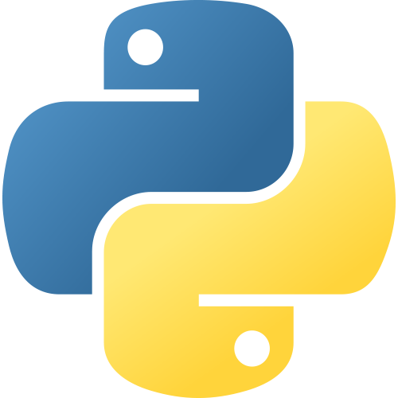
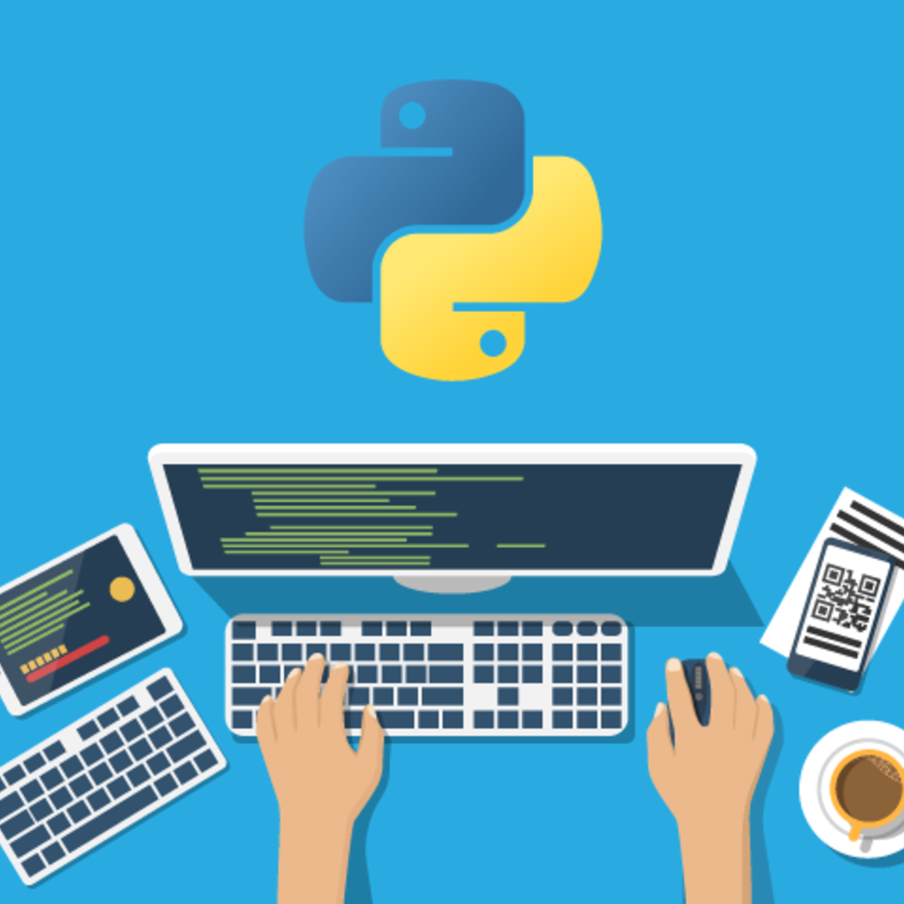
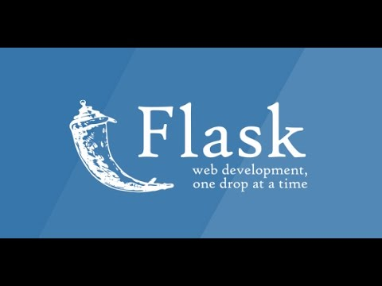

Python:

Es un lenguaje de programación versátil multiplataforma y multiparadigma que se destaca por su código
legible y limpio.Una de las razones de su éxito es que cuenta con una licencia de código abierto que
permite su utilización en cualquier escenario. Esto hace que sea uno de los lenguajes de iniciación de
muchos programadores siendo impartido en escuelas y universidades de todo el mundo. Sumado a esto cuenta
con grandes compañías que hacen de este un uso intensivo.
En el siguiente link tenes acceso a un excelente Curso en videos de Python desde Basico a Avanzado:
Curso gratis de Python.

Flask:

Flask es un framework que permite desarrollar aplicaciones web de forma sencilla, está especialmente guiado
para desarrollo web fácil y rápido con Python. Una de sus características a destacar es el potencial de instalar
extensiones o complementos acorde al tipo de proyecto que desarrollarás. Sólo instalas las funcionalidades que
en realidad vayas a utilizar.
En el siguiente link tenes acceso a un excelente Curso en videos de Flask desde Basico a Avanzado y conexion a SQL:
Curso gratis de Flask.
Django:
 es un framework de aplicaciones web gratuito y de código abierto (open source) escrito en Python. Un framework web
es un conjunto de componentes que te ayudan a desarrollar sitios web más fácil y rápidamente.
es un framework de aplicaciones web gratuito y de código abierto (open source) escrito en Python. Un framework web
es un conjunto de componentes que te ayudan a desarrollar sitios web más fácil y rápidamente.
Cuando construyes un sitio web, siempre necesitas un conjunto de componentes similares: una manera de manejar la
autenticación de usuarios (registrarse, iniciar sesión, cerrar sesión), un panel de administración para tu sitio web,
formularios, una forma de subir archivos, etc.
En el siguiente link tenes acceso a un excelente Curso en videos de Django desde Basico a Avanzado.:
Curso gratis de Django.
Click aqui para ir al Homepage